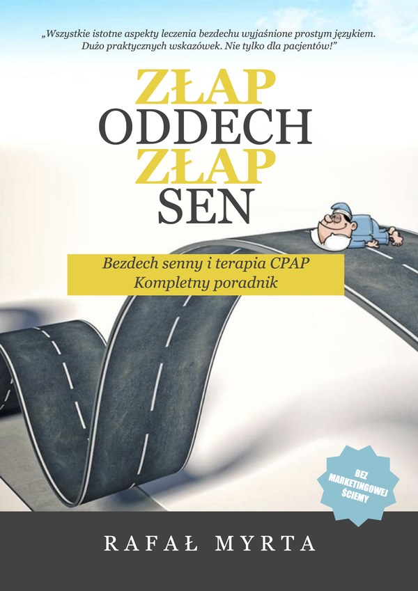
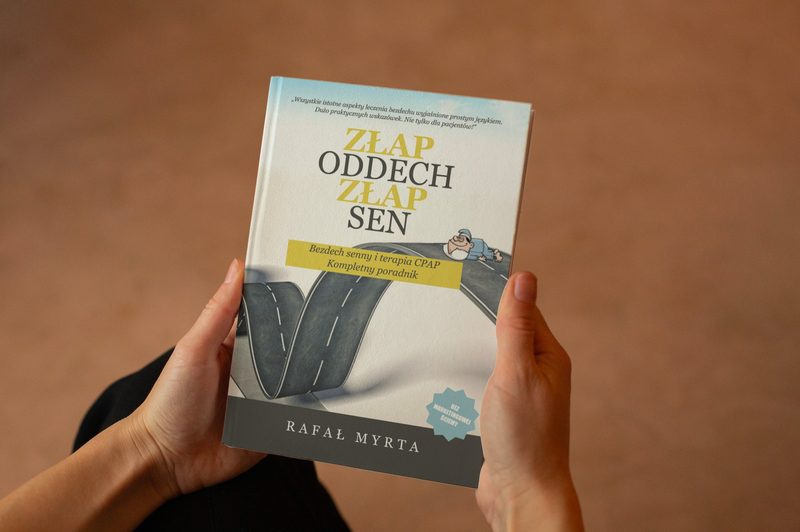
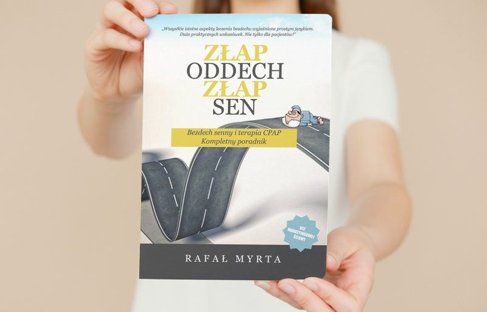

Złap oddech, złap sen
Bezdech senny i terapia CPAP. Kompletny poradnik.


Spis treści
- Prolog
- 1.Czym jest bezdech senny
- 2.Porozmawiajmy o diagnostyce
- 3.Nie tylko CPAP
- 4.I co teraz będzie?
- 5.Powiedz, który lepszy
- 6.Dobra maska to podstawa
- 7.Przygodę czas zacząć
- 8.Spodziewaj się najlepszego
- 9.Komfort ponad wszystko
- 10.Częste mycie wydłuża życie
- 11.Kontrola formą zaufania
- 12.Adaptuj się!
- 13.Czarna lista skutków ubocznych
- 14.Chory miś
- 15.Podróżować jest bosko
- 16.Każdego może trafić
- 17.Śpij słodko aniołku
- 18.Tylko dla nerdów
- 19.Na dobry koniec (załączniki)
- Troubleshooting terapii CPAP
- Karta samooceny terapii CPAP
- Słownik pojęć
Prolog
Obudziłem się nad ranem wyraźnie czując, że coś nie jest w porządku. Szybko dotarło do mnie, że nie mogę się poruszać, a ledwie sekundę później, że nie mogę także mówić ani oddychać. Żona spała obok, ale nie mogłem jej dać znać, że coś się ze mną dzieje. Najpierw zalało mnie uczucie totalnej paniki i oblał zimny pot.
Po chwili nieco się uspokoiłem i dokonałem szybkiej analizy sytuacji. To musi być udar! Dwóch dziadków tak zmarło. Nieszczególnie dbałem ostatnio o zdrowie, więc w sumie sam się prosiłem. Życie dosłownie przemknęło mi przed oczami i zdążyłem nawet pomyśleć o tym, co wydarzy się po moim odejściu.
W pewnym momencie zaczęło robić się ciemno i wtedy opanował mnie totalny spokój. Pogodziłem się ze śmiercią i odpłynąłem w nicość. Pamiętam nawet, że jeszcze w ostatniej sekundzie pomyślałem, że nie jest wcale tak źle...
Szczęśliwie, nie było to doświadczenie śmierci, a jedynie ciężki przypadek bezdechu sennego połączony z paraliżem przysennym. Teraz wiem, że nie było to bezpośrednie zagrożenie życia i jestem sobie w stanie to zracjonalizować. Niemniej nadal mam w głowie to uczucie. Jestem przekonany, że akt pogodzenia się ze śmiercią zmienia człowieka już na zawsze i nie zapomnę tego doświadczenia nigdy.
To, co się zmieniło w tamtej chwili, to fakt, że jeszcze tego samego dnia kupiłem swój pierwszy aparat CPAP, aby już nigdy nie poczuć czegoś podobnego. Nie chciałem czekać ani dnia, więc aparat zakupiłem za gotówkę, nie czekając nawet na wizytę u lekarza i wniosek refundacyjny.
Dalszą część prologu i całą książkę znajdziesz po zakupie.
92 strony praktycznej wiedzy o bezdechu sennym
Bez marketingowej ściemy. Od diagnostyki, przez dobór sprzętu, po codzienne życie z CPAP.
Kup książkę